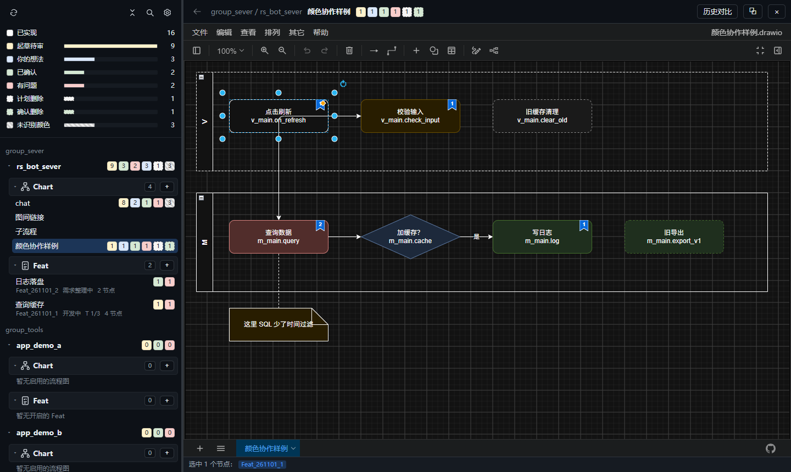
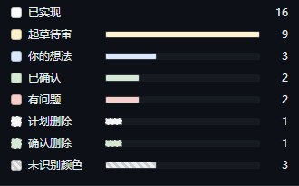
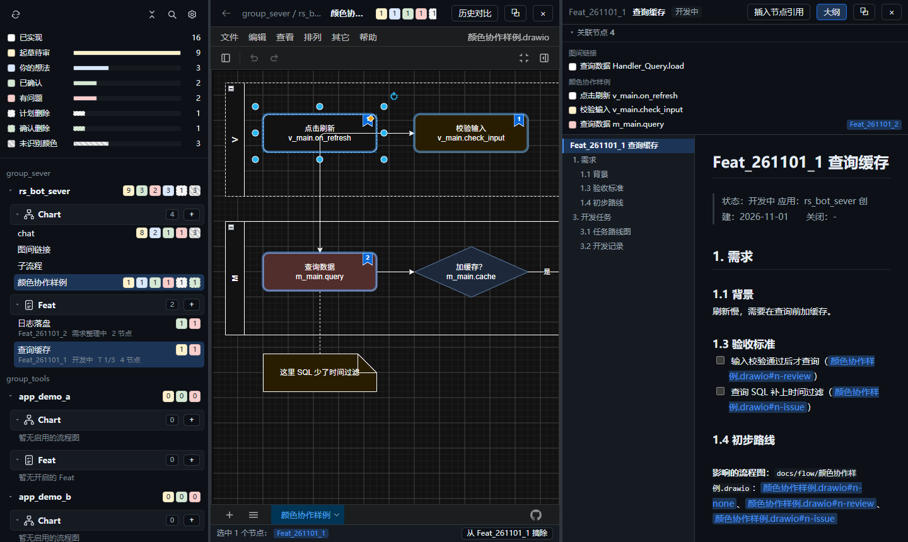

开始使用
Flow Coding 把每个 APP 的 draw.io 流程图和 Feat 需求档案放在一起。你在图上用颜色提要求，Agent 按颜色改代码、再把颜色改回来。
- 点左上角齿轮 →「项目」→「项目目录」，每行填一个项目根目录，点「保存并扫描」。
- 左侧按 APP 列出
docs/flow 下的流程图（Chart）和 docs/feat 下的 Feat 档案。
- 点一张图在右侧打开。所有改动立即写盘，没有「保存」按钮。
在左侧 APP 或分组标题上右键，可「复制路径」「复制名称」或「移除目录」。复制名称取磁盘目录原名；移除前会再次确认，只从 Flow Coding 列表排除，保留磁盘文件，重新扫描也不会自动恢复。恢复时在设置的「项目目录 → 排除路径」中删除对应项，再保存并扫描。

左侧树与状态统计，右侧直接编辑流程图。
节点颜色
节点的填充色就是它的状态。选中节点后，在 draw.io 右侧格式面板点状态按钮即可，删除类状态会同时设为虚线。
| 状态 | 谁标记 | 含义与下一步 |
|---|
| 已实现 | — | 代码已与图一致。 |
| 你的想法 | 你 | 新想法或改动。Agent 评估可行改黄，不可行保持蓝并用便签写原因。 |
| 起草待审 | Agent | 方案写好等你审：同意改绿，不同意改红。 |
| 已确认 | 你 | 下一轮执行。Agent 改完代码改回无色。 |
| 有问题 | 你 | 问题写在节点里或用便签连过去。Agent 修正后改黄。 |
| 计划删除 | Agent | 建议删掉这一步：同意改绿虚线，不同意改无色。 |
| 确认删除 | 你 | Agent 删除节点和对应代码。 |
其他颜色计为「未识别颜色」，改成上表中的颜色即可。连线、便签、文本、泳道和分组不计入统计。
协作流程
一次典型的来回：你把节点标蓝 → Agent 出方案标黄 → 你审核标绿 → Agent 改完代码标回无色。发现问题随时标红，Agent 修完会再交回黄色给你审。
状态统计
左上角汇总所有启用流程图的节点状态。点一行只显示含该状态节点的图，再点一次取消；可以和搜索叠加。

例如点「起草待审」，快速找到等你审核的图。
Feat 档案
选中节点，点底部状态栏「挂到 Feat_xxx」把节点关联到当前 Feat。挂了 Feat 的节点右上角显示蓝色书签，点书签打开档案，并与流程图左右分栏显示。

档案顶部列出关联节点，点击即可在图中定位。
档案里用 图名.drawio#节点id 引用节点，预览中可点击跳转；「插入节点引用」把当前选中节点插入光标处。
左侧 Feat 状态标签
Feat 名称旁显示简短状态标签，第二行保留档案中的原始状态说明和任务进度。名称过长时省略，状态标签保持单行完整显示。
| 标签 | 含义 |
|---|
| 探讨中 | 正在讨论目标与方案。 |
| 需求中 | 正在整理需求与验收标准。 |
| UI设计 | 正在设计界面。 |
| 开发中 | 正在开发或部分功能已接入。 |
| 待测试 | 档案明确标记开发完成，等待测试。 |
| 测试中 | 正在执行测试。 |
| 待验收 | 档案标记测试完成，或等待用户确认、验收。 |
| 已暂停 | 暂时停止推进。 |
| 已关闭 / 已废弃 | 已正式收口或放弃需求，归入收纳区。 |
| 待明确 | 档案未注明状态，或状态文字无法明确判断。 |
注意：标签按档案「状态」开头的文字归纳，不会因为说明里出现「验证通过」「待验收」就自动切换阶段。例如「开发已接入，程序 / FAB 验证通过，待 LR 协议及现场定位验收」仍显示「开发中」。
Feat 状态标签统一显示在第一行末尾，只使用上表阶段；不显示节点颜色统计块或「可关闭」标签。第二行显示编号、任务进度、节点数及编辑锁提示。关闭 Feat 前仍需核对档案与验收结果，并通过关闭流程正式收口。
图间链接
在 draw.io 中右键节点 →「编辑链接」，填 子流程.drawio 或 子流程.drawio#节点id。节点出现箭头角标，点击打开目标图；流程图顶栏左侧的返回箭头逐层回到来源图。
Agent 加锁
Agent 改图或改档案前必须加锁，期间 App 显示只读遮罩；解锁后自动合并磁盘最新内容。
flowctl lock <文件> --wait 30
# 编辑文件
flowctl unlock <文件>
你在 App 里编辑时会自动持有用户锁，停止编辑 3 秒后释放。
历史对比
每次写盘内容有变化都会记一条快照。点流程图顶栏「历史对比」，勾选两个快照，按节点列出新增、删除、文字变化和状态变化；也可以只读查看旧版或回滚。